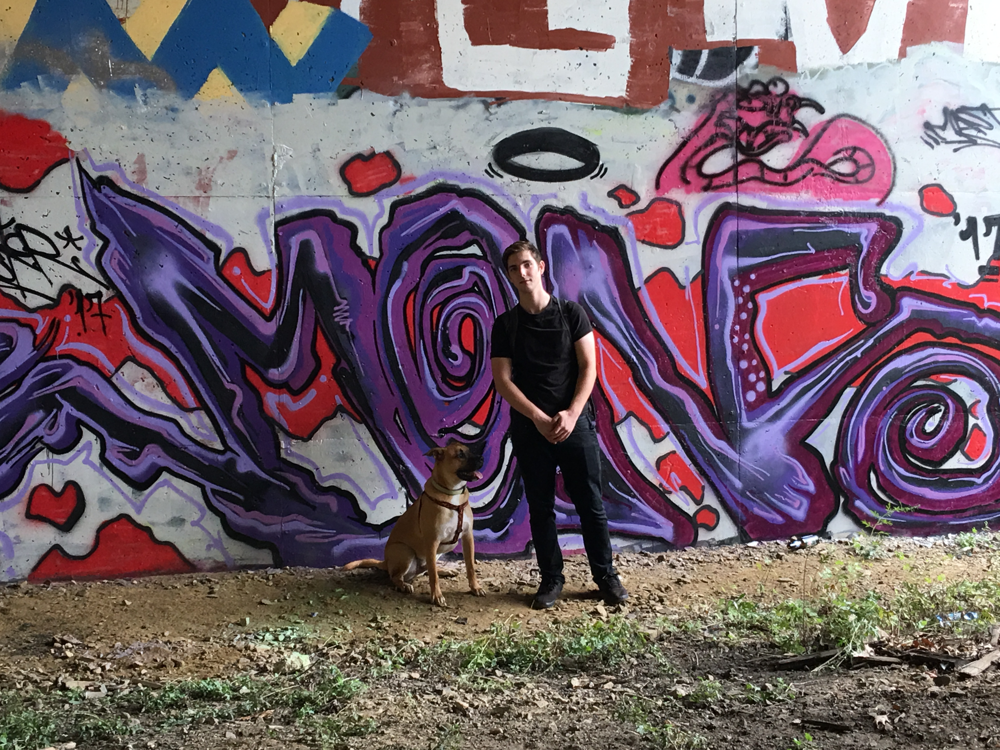

About Me

My name is Jacob Plaisted, but I am formally known as Obiwan-Jacobi. I have just joined the UNH coding bootcamp to persue my passion for programming & technology. I am a lover of FOSS & open-source technologies, as well as, the communities they create. I am a huge fan of GNU/Linux Operating system. One of my favorite past times is playing around on my Linux box and trying to figure out all the problems I created the previous day when I was trying to fix other problems. :P When I'm not fixing bugs and or creating them, I love seeing how I can optimize my machine & tailor my UX/UI to fit my personal aesthetic.
When I'm not programming or playing around on my Computer, I love riding white stallions along sugar sandy beaches while my hair flows majestically from a tender sea breeze. Also, I love playing with my dog Linus and taking him on walks in the woods. Linus & I are both very passionate about eating spicy ramens while watching old anime shows,